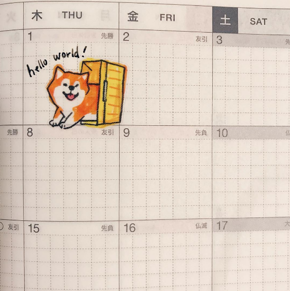

I'm Nadine. I'm a designer experienced with owning UX design and UX research techniques to explore and bring ideas from early concept to finished, validated feature.
I graduated from the University of Washington (B.S. Computer Science, M.S. Human Centered Design & Engineering).
I design, code, take pictures, draw, write, play with my dog, study Japanese, and a lot of other things. I read a lot (recently, The Dog Merchants and Sayaka MURATA's Convenience Store Woman).
I also love video games (recently, Stardew Valley, though I'm extremely very looking forward to the new Animal Crossing!!!).
In general, I enjoy buildings things that are not just fun, but do good by providing a service for people in their everyday lives.
(The font used in the headers of this website is Maragsâ Display by John David Maza.)